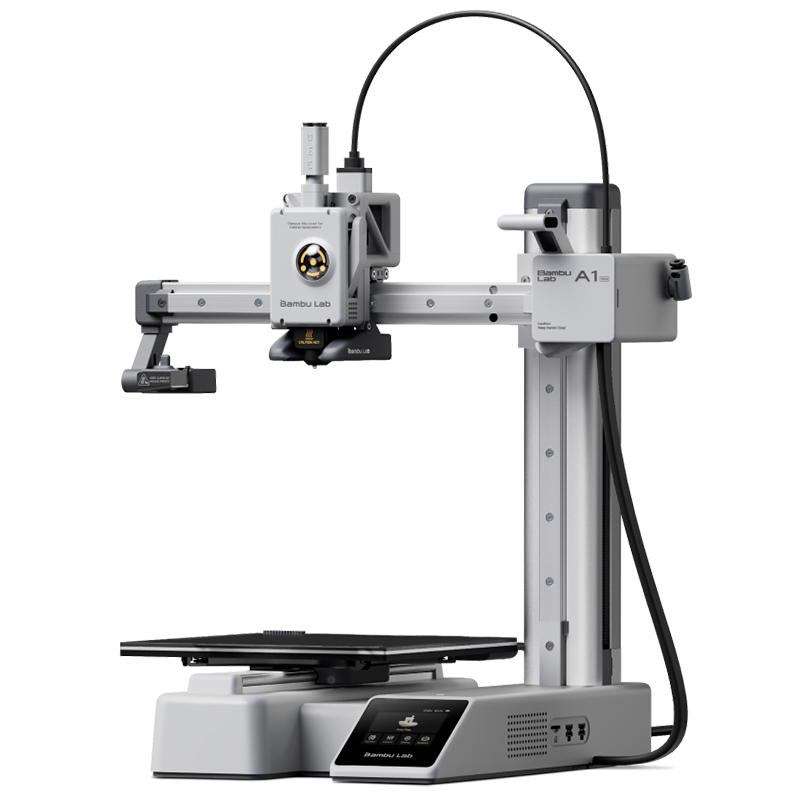

Bambu Lab A1
A Bambu Lab A1 é uma impressora 3D veloz e precisa, com calibração automática e suporte a múltiplas cores. Utiliza tecnologia de impressão 3D, que cria objetos físicos a partir de modelos digitais, camada por camada, permitindo projetos criativos com alta qualidade e personalização.